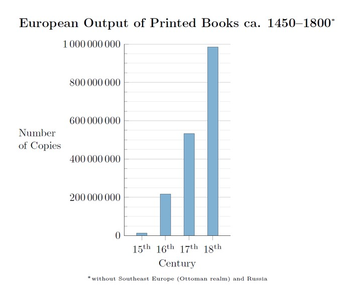

Changing The Game With Books
Post printing press, it became substantially easier for engineers to publish their work and for other engineers to read it. With the spread of books came the advancement of knowledge. Ideas could be spread faster without the need for physical interaction one on one, engineers around the world could learn about technology being conjured up in a different hemisphere, and engineers now had a base of other engineers work to build on. Today the use of books is still extremely relevant to engineering. We use books in our classrooms, we use them for reference, and simply the general spread of knowledge. Although a majority of scientists and engineers publish their work in patents or research papers, many engineers still publish books of their findings. Books such as Relativity: By Albert Einstein and A Stubborn Persistent Allusion: by Steven Hawking, are considered some of the greatest pieces of scientific reading in history. These books are still used today to teach Astrophysicists and engineers studying relativity, the findings of the greatest minds of our time. All preference to the internet aside, books have served as a wealth of knowledge for hundreds of years and continue to spread information to people around the world.